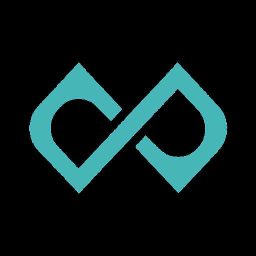

15:15 · 10 BYN
16:15 · 10 BYN
ещё 69
0. Подборка открыта из чата / сторис — новая кнопка под шерингом
Открывает это же расписание одним тапом с рабочего стола
1. Шторка: пользователь в браузере Telegram (iPhone)
2. Тот же сценарий в Safari — меньше шагов
3. Android + Chrome: ближе к «одной кнопке» (beforeinstallprompt)
4. Результат: тап по иконке → снова /c/minsk, актуальные сеансы

Лёд · Минск
Иконка из apple-touch-icon · короткое имя из manifest.
Запись и профиль — по кнопке «Открыть в Telegram» на странице.
Сохраните подборку на главный экран. Ссылка: /c/minsk